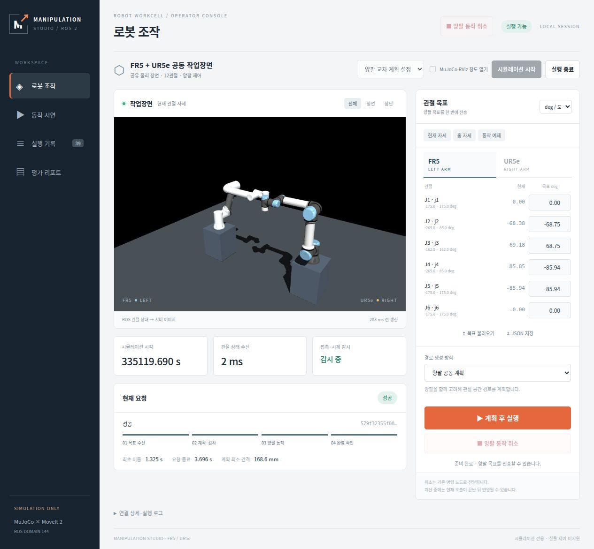
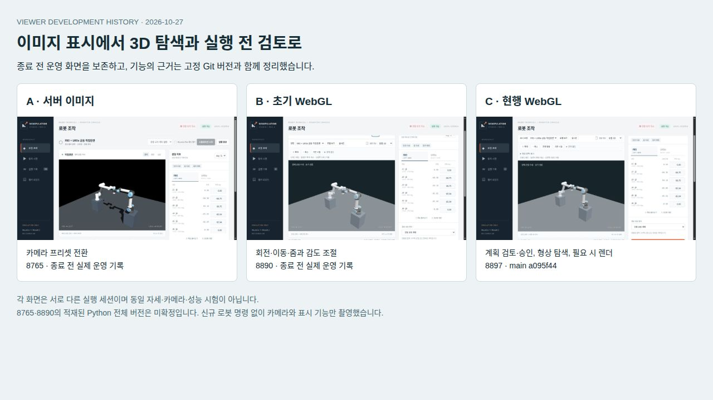
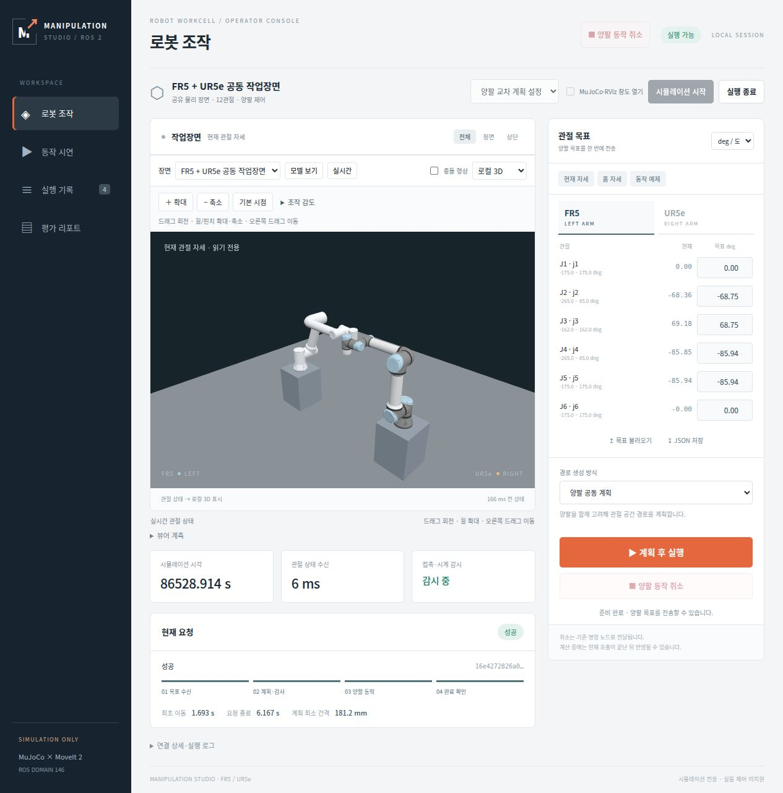
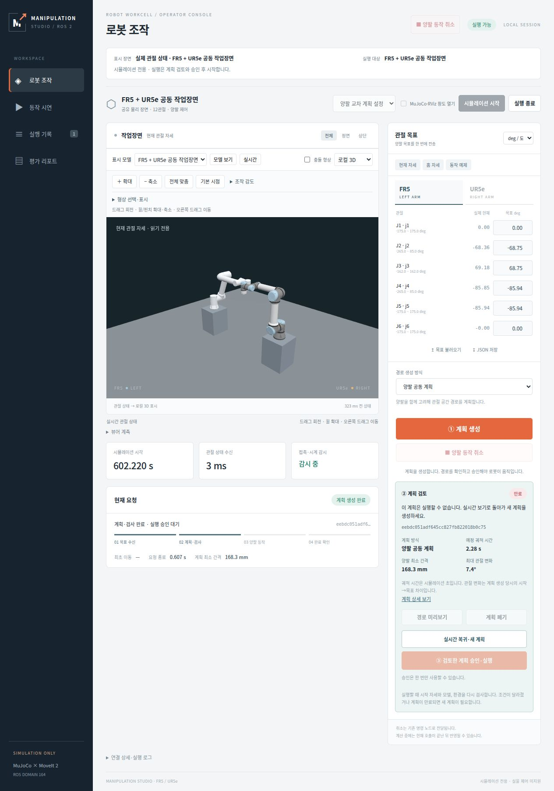
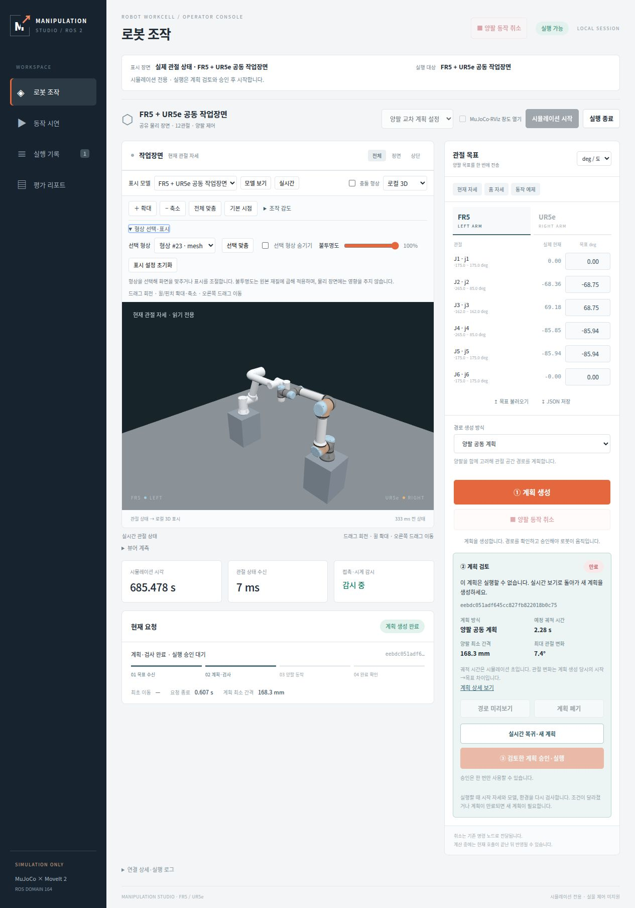

서버의 캡처 이미지
MuJoCo 렌더러가 관절 상태로 이미지를 만들고 웹 화면으로 보냅니다. 10월 22일 시연은 카메라 프리셋과 관절 목표 입력을 사용했습니다.


새 촬영본의 실행 코드 전체 버전은 미확정입니다. 아래 22일 원본 영상과 구분합니다.
개발 이력 · 운영 정리 · 2026-10-27
서버 2D 이미지 스트리밍, 초기 WebGL, 현행 WebGL을 화면과 영상으로 비교합니다.
구형 서버는 실행 환경 대신 소스 코드와 자료 형태로 보존합니다.
서버의 2D 이미지 스트리밍 화면에서, 브라우저가 3D 모델을 직접 렌더링하고 계획을 확인하는 화면으로 확장되었습니다.
초기 WebGL에서는 시점을 직접 조작할 수 있게 했습니다.
현행 버전은 표시할 모델과 실행 대상을 구분하고, 계획 검토·승인·이력 연결과 형상 탐색을 지원합니다.
포트 번호는 개발 버전이 아닙니다.
현재 운영 상태와 구분: 아래 화면과 서버 정리는 10월 27일의 기록입니다. 10월 30일 조사한 여섯 뷰어의 역할·실행 상태와 새 동작 영상은 현재 뷰어 상태 리포트에서 확인합니다. 기존 영상을 새 구현이나 같은 조건의 성능 비교로 바꾸어 해석하지 않습니다.
50b549b로 확인됩니다. 8765의 새 촬영본은 별도의 현재 운영 기록입니다.9b390ef를 기준으로 설명합니다. 8890의 적재된 Python 코드 전체 버전은 확정하지 않습니다.a095f44를 기준으로 합니다. 8897은 촬영 당시 로컬 main 뷰어의 포트이며, 8902 개발 환경은 비교 당시 같은 화면 기능을 갖습니다.
v1.1 영상 수정: 8897 영상에서 3D 하단이 잘리던 부분을 다시 촬영했습니다. 전체 페이지에서 3D 카드 전체를 가져와, 형상 패널을 펼쳐도 캔버스가 빠짐없이 보이도록 구성했습니다. A·B는 정리 전 촬영본을 유지하고 C만 정리 후 다시 촬영했습니다. 촬영 영역 검증
화면 기록(샘플 캡처 재구성), 성능평가 영상 아님. 브라우저 화면을 약 250 ms 간격으로 캡처하고, 촬영 공백을 제외해 초당 4개 표본으로 재구성했습니다. 24 fps 인코딩에는 반복 프레임이 포함됩니다. 짧은 구간이 먼저 끝나면 마지막 화면을 유지합니다. 새 촬영에서는 로봇 명령을 발행하지 않았습니다. 촬영·인코딩 속도로 실제 표시 FPS나 입력 지연을 판단할 수 없습니다. 각 화면은 서로 다른 실행 상태를 기록했으며, 로봇 자세와 카메라·픽셀 색상을 맞춘 시험이 아닙니다.
MuJoCo 렌더러가 관절 상태로 이미지를 만들고 웹 화면으로 보냅니다. 10월 22일 시연은 카메라 프리셋과 관절 목표 입력을 사용했습니다.

새 촬영본의 실행 코드 전체 버전은 미확정입니다. 아래 22일 원본 영상과 구분합니다.
로봇 모델과 작업 환경, 관절 자세를 받아 브라우저에서 3D로 표시합니다. 회전·이동·줌, 감도 설정과 저장된 계획의 읽기 전용 재생을 제공합니다.

기능 설명의 화면 코드 기준은 9b390ef입니다. 현재 서버의 적재된 Python 코드와 동일하다는 주장은 하지 않습니다.
기존 모션 플래너를 유지하면서 계획을 화면에서 검토하고 승인하는 기능을 추가했습니다. 표시 모델과 실행 대상을 구분하고, 형상을 선택해 화면에 맞추거나 로컬 표시를 조절할 수 있습니다.

main a095f44, 기능 구현 f5079ea 기준입니다. 모델 보기와 로컬 표시 변경은 로봇 실행을 요청하지 않습니다.

당시 시뮬레이션에서 FR5의 이동, 접근, 후퇴, 홈 복귀를 실행한 영상입니다. 이번에 새로 실행한 동작이 아닙니다. 물체 파지는 포함하지 않습니다.
영상 5. 서버 이미지 뷰어의 기존 동작 시연 · 영상 원본
44.25초, 2400 × 1796, 12 fps 녹화입니다. 당시 제품의 이미지 표시 상한은 5 fps이며, 반복 프레임을 포함합니다. 촬영 코드 50b549b와 원본 파일 SHA는 고정 근거에서 확인할 수 있습니다.
코드와 기존 검증 기록을 기준으로 한 정성 비교입니다. 포트별 신규 촬영만으로 기능의 유무나 성능을 판정하지 않습니다.
| 항목 | A · 서버 이미지 | B · 초기 WebGL | C · 현행 WebGL |
|---|---|---|---|
| 3D·이미지 표시 | 서버 MuJoCo 이미지 | 브라우저 Three.js와 관절 자세 | WebGL 유지, 서버 이미지 전환도 유지 |
| 시점 조작 | 전체·정면·상단 프리셋 | 회전·이동·줌, 조작 감도 | 기존 조작, 전체 맞춤·선택 맞춤·기본 시점 |
| 로컬 형상 탐색 | 3D 선택 없음 | 개별 형상 선택·표시 조절 없음 | 직접 선택·목록 선택·강조·숨김·투명도 |
| 계획·실행 | 관절 목표의 계획 후 실행·취소 | 기존 실행, 저장된 계획 읽기 전용 표시 | 계획 검토와 명시적 승인, 느린 재생·최소 간격 시점·재계획·이력 연결 |
| 표시와 실행 대상 | 현재 FR5 + UR5e 작업 환경 중심 | 모델·실시간·저장 계획 표시 | 공급원과 표시 모드, 실행 대상·실시간 관절 상태를 분리해 표시 |
| 화면 제출 | 주기적으로 전달되는 이미지 | 연속 WebGL 렌더링 | 자세·카메라·표시 변화 때 렌더링, 유휴·숨김 조회 조절 |
| 검토 중 표시 변경 | 해당 기능 없음 | 해당 기능 없음 | 계획 검토 중 숨김·투명도 잠금, 선택·맞춤 허용 |
| 실패·복구 | 요청 상태와 오류 표시 | stale 상태·모델/sequence 검사 | GET 본문까지 시간 제한, 오래된 응답 차단, 그래픽 복구·실시간 복귀 |
A는 22일 촬영 코드, B는 9b390ef 화면 코드, C는 a095f44 코드와 검증 기록을 사용합니다. 형상 선택은 로봇 목표 지정이나 TCP 드래그 기능이 아닙니다. 여러 시뮬레이터·센서를 즉시 연결하는 범용 통합 완료를 의미하지 않습니다.
새 비교 영상은 화면 기록입니다. 아래 수치는 이미 보존된 별도 시험의 결과이며, 서로 다른 시험의 숫자를 하나의 성능 개선율로 합치지 않습니다.
FR5 + UR5e의 8.622초 관절 기록을 반복 재생했습니다. 같은 640 × 480, DPR 1, 카메라, 250 ms 조회, NVIDIA RTX 3050에서 새 서버·Chrome 프로세스로 방식별 15초 × 3회 측정한 중앙값입니다.
| 측정값 | JPEG | 당시 연속 렌더 WebGL |
|---|---|---|
| 표시 횟수 / 초 | 3.991 | 59.962 |
| 새 자세·이미지 / 초 | 3.991 | 3.989 |
| 반복 응답 본문 | 68.39 kB/s | 48.79 kB/s |
| 브라우저 CPU | 2.99% | 18.02% |
| 시험 서버 CPU | 1.73% | 0.60% |
WebGL은 같은 자세를 다시 그린 제출도 포함합니다. JPEG는 decode·draw 후 다음 rAF 도달 횟수입니다. 두 값은 실제 paint 측정이 아닙니다. CPU 100%는 코어 하나이며, 전체 CPU 감소는 확인하지 않았습니다. WebGL 초기 자산 3,442,575 bytes, 상태 API·HTTP 헤더는 반복 본문량에서 제외합니다. 제품의 비동기 이미지 작업자·ROS 제어 경로 전체를 비교한 시험이 아닙니다. 조건·원본 자료
로봇 대신 단순 도형 두 개를 사용한 별도 시험입니다. 같은 브라우저·RTX 3050·640 × 480·DPR 1·카메라에서 1초 대기 후 10초씩 한 번 관찰했습니다.
| 조건 | 이전 연속 렌더 | 현행 필요 시 렌더 |
|---|---|---|
| 정지 · 10초간 제출 | 599회 | 0회 |
| 4 Hz 입력 · 10초간 제출 | 599회 | 40회 |
| 4 Hz 입력 · 적용 자세 | 40개 | 40개 |
이전 cdfebf3, 이후 f5079ea 파일 해시를 확인했습니다. 독립 반복·장시간 시험은 아닙니다. CPU 제출 횟수를 측정했으며 GPU 완료, paint 지연, CPU·GPU 사용률이나 VRAM 감소를 측정하지 않았습니다. 현행 화면이 멈춰 있을 때 0 FPS가 표시되어도 연결 끊김을 의미하지 않습니다. 조건·원본 해시
26일 제품 기본 설정의 정지 자세 예비 시험, SwiftShader 소프트웨어 시험, 위의 NVIDIA 시험은 조건이 다릅니다. 이 문서는 원본을 변경하거나 결과를 합산하지 않습니다.
과거 실행 서버를 계속 켜두면 포트와 버전이 혼동되고 시뮬레이션 자원이 사용됩니다. 화면과 기존 영상, 고정 코드 링크, 실행 정보와 종료 결과를 함께 보관했습니다.
아래 포트는 촬영 당시 개발 PC에서 사용한 로컬 포트입니다. 공개 웹 서비스의 접속 주소나 현재 실행 상태를 나타내지 않습니다.
| 포트 | 기록한 역할 | 2026-10-27 14:01 기준 |
|---|---|---|
| 8765 | 이전 서버 이미지 환경 | 자료 보존 후 서버·소유 시뮬레이션 종료 완료 |
| 8890 | 이전 WebGL 환경 | 자료 보존 후 서버·소유 시뮬레이션 종료 완료 |
| 8897 | 당시 main 로컬 뷰어 | 유지 |
| 8902 | 개발·검증 뷰어 | 개발용으로 구분해 유지 |
| 8904 | 리포트 미리보기 | 제어 서버와 구분해 유지 |
2026-10-27 14:01 기준 8765·8890 종료 완료, 8897·8902·8904 유지. 정리 결과 요약
원본 실행 로그와 세부 프로세스 정보는 로컬에 보관했습니다. 이 공개 페이지는 개발 PC의 프로세스 상태를 조회하지 않습니다.
이전 소스와 실행 기록은 로컬 보관본에 남겼으며, 공개 자료에서는 같은 시점의 Git 커밋을 연결합니다. A·B의 고정 코드가 촬영 당시 서버에 그대로 적재되어 있었다고 단정하지 않습니다.
원본 저장소와 Git 이력, 기존 리포트는 유지합니다. 공개한 파일은 파일별 SHA-256으로 확인할 수 있습니다.
재실행은 고정 커밋의 별도 체크아웃과 해당 의존성을 준비한 뒤 진행합니다. 포트만 다시 열어서 과거 버전 재현으로 취급하지 않습니다.
확인일: 2026-10-27 · 아래 저장소 링크는 커밋으로 고정했습니다. 새 사진·영상의 시각과 구성 방법은 공개용 촬영 요약에 기록합니다.